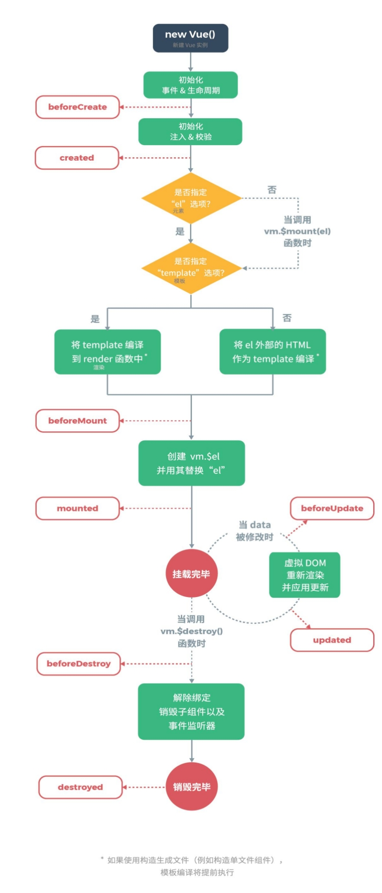

钩子函数:
# 1.beforeCreated： 我们在用 Vue 时都要进行实例化，因此， 该函数就是在 Vue 实例化时调用，
也可以将他理解为初始化函数比较方便一点， 在 Vue1.0 时， 这个函数的名字就是 init。
# 2.created： 在创建实例之后进行调用。
# 3.beforeMount： 页面加载完成， 没有渲染。 如： 此时页面还是{{name}}
# 4.mounted： 我们可以将他理解为原生 js 中的 window.onload=function({.,.}),
或许大家也在用 jquery， 所以也可以理解为 jquery 中的$(document).ready(function(){….})，
他的功能就是： 在 dom 文档渲染完毕之后将要执行的函数， 该函数在 Vue1.0 版本中名字为compiled。
此时页面中的{{name}}已被渲染成张三
# 5.beforeDestroy： 该函数将在销毁实例前进行调用 。
# 6.destroyed： 改函数将在销毁实例时进行调用。
# 7.beforeUpdate： 组件更新之前。
# 8.updated： 组件更新之后。